Client invite on create: before / after
Recorded evidence · ready for review · approval and release remain separate
Actual baseline and proposed UI with the same fictional client, dark theme, viewport and initial/off action state. Eight retained desktop/390px images are reused unchanged; only the missing 320px states were captured.
Before: 61a6305b5164af0edbf7a0ddf49aa7eca4732c6e
Proposed implementation: 0e4313780f1a0712badc20cc0148cc84894327b3
Change documentation · Sources, dimensions and SHA256 manifest. Click any image for its original full-size pixels.
320px phone · New client
The new optional invite checkbox starts unchecked; Cancel is available and email/phone use separate rows.

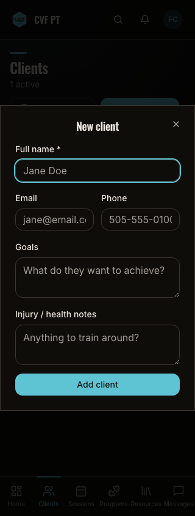

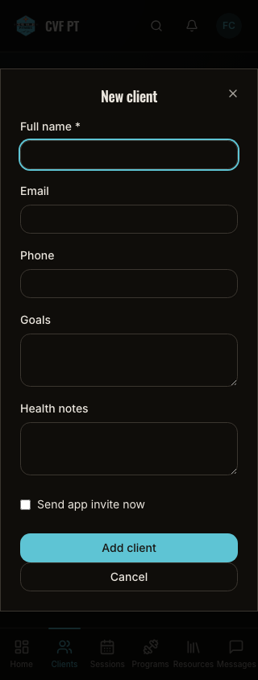
Additional viewport / full-page context


320px phone · Client detail at page bottom
The card separates claim permission from email outcome and explains that withdrawal cannot undo an email already handed over.

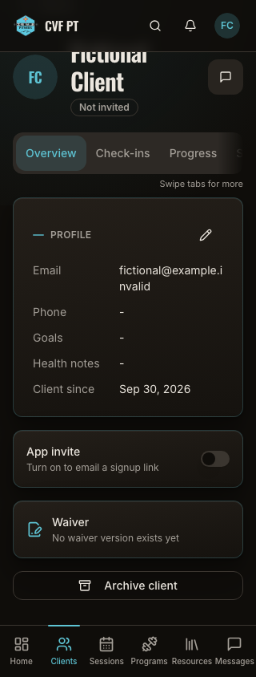

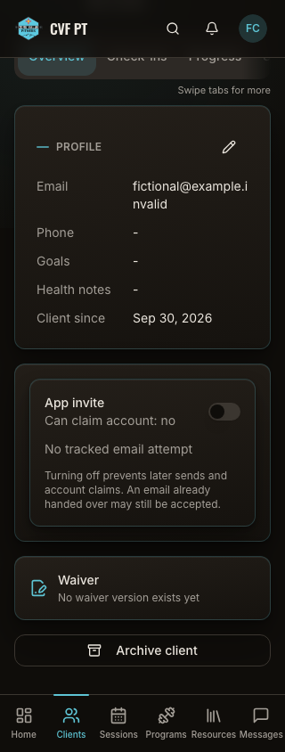
Additional viewport / full-page context

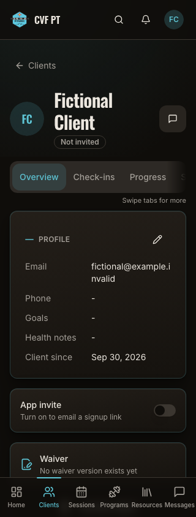

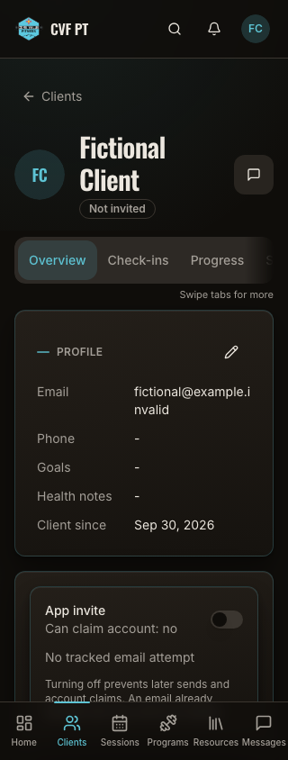

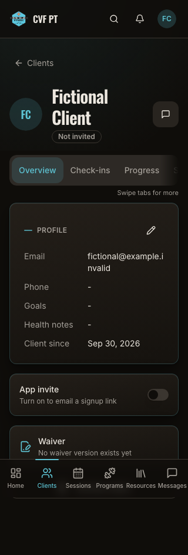

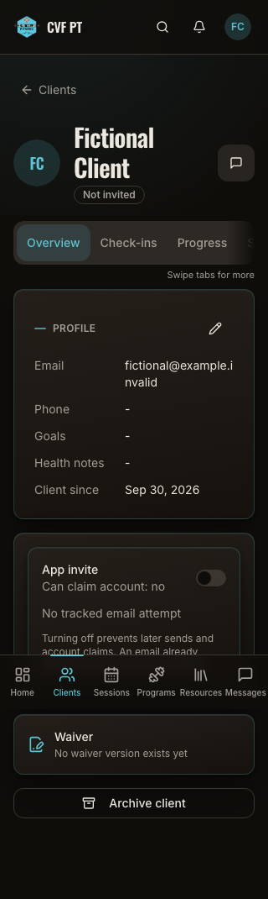
390px phone · New client
The new optional invite checkbox starts unchecked; Cancel is available and email/phone use separate rows.

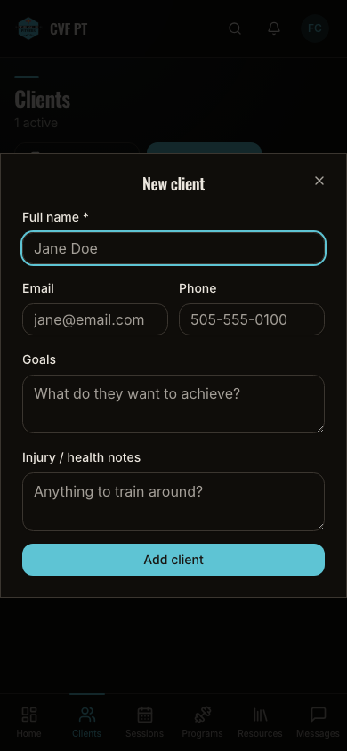

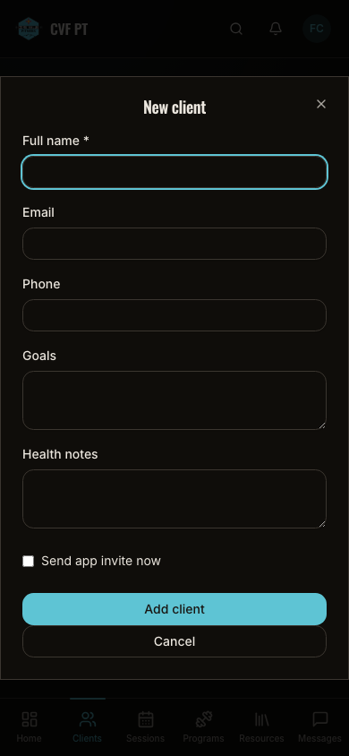
390px phone · Client detail
The card separates claim permission from email outcome and explains that withdrawal cannot undo an email already handed over.

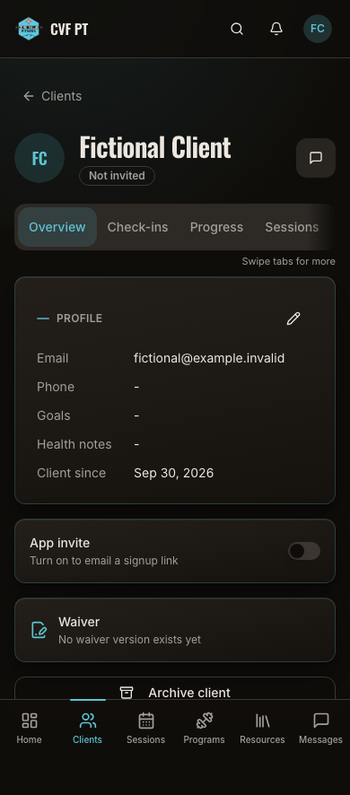

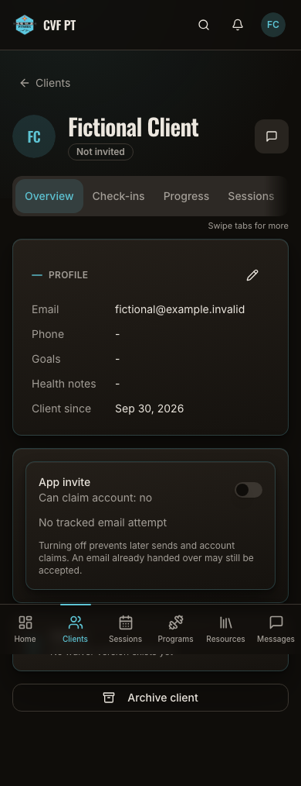
1390px desktop · New client
The new optional invite checkbox starts unchecked; Cancel is available and email/phone use separate rows.

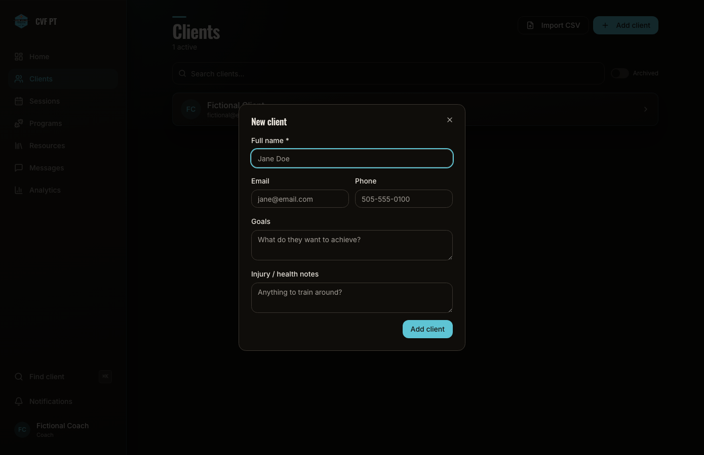

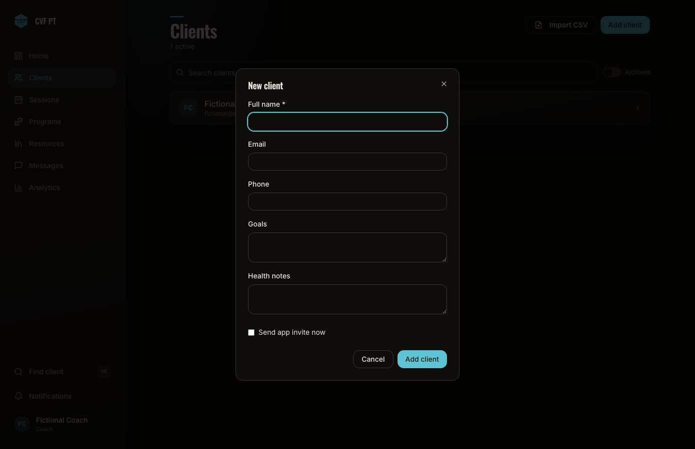
1390px desktop · Client detail
The card separates claim permission from email outcome and explains that withdrawal cannot undo an email already handed over.

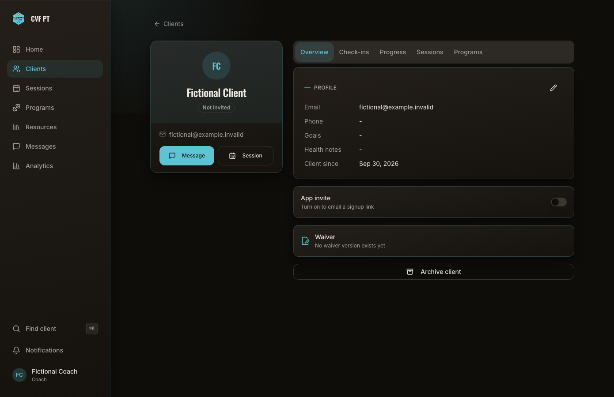

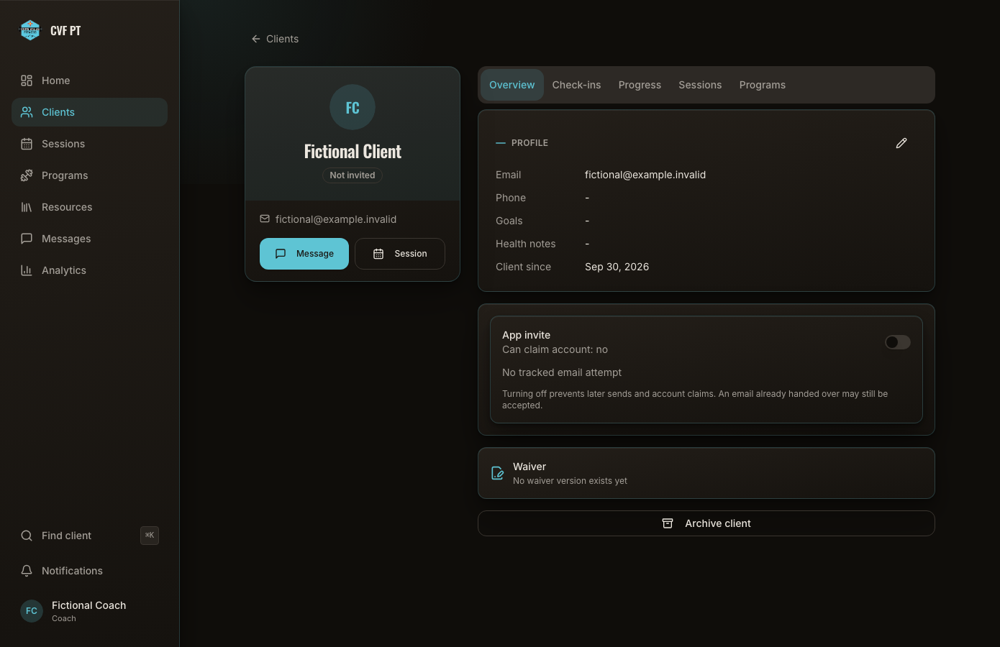